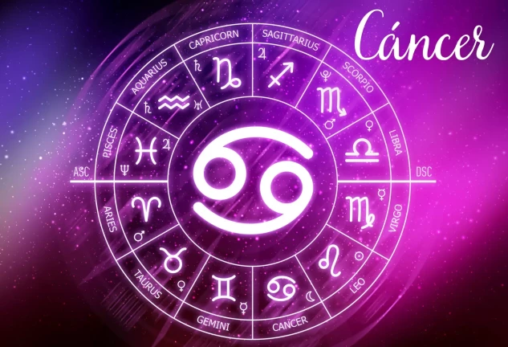
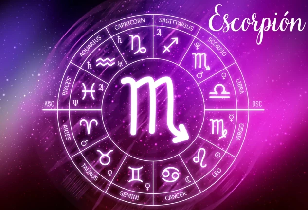

En astrología, Cáncer es el cuarto signo del zodíaco, el segundo
de naturaleza femenina o negativa y el segundo de cualidad cardinal.
Simboliza la familia y su símbolo representa un cangrejo. Pertenece
junto a Escorpio y Piscis al elemento agua. Está regido por la Luna.
Cáncer se caracteriza por su naturaleza protectora y su profundo
vínculo con las personas que ama. Gobernado por la Luna, se asocia
con las emociones y la sensibilidad hacia los demás.

En astrología, Escorpio o Escorpión es el octavo signo del zodíaco,
el cuarto de naturaleza negativa y el tercero de cualidad fija,
representado por el escorpión. Simboliza la transformación y el
renacimiento. Pertenece junto a Piscis y Cáncer al elemento agua.
Está regido por Marte y Plutón.
Se le atribuyen imaginación e intuición, además de capacidad para
el análisis, fuerza de voluntad y firmeza. También se relaciona
con la sensibilidad y las emociones.

En astrología, Piscis es el duodécimo y último signo del zodíaco,
el sexto de naturaleza negativa y de cualidad mutable, simbolizado
por dos peces que nadan en sentidos opuestos. Pertenece, junto a
Cáncer y Escorpio, al elemento agua.
Se caracteriza tradicionalmente por su sensibilidad ante el
sufrimiento de los demás y su disposición para ayudar.